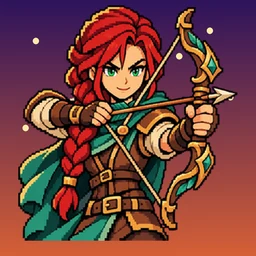
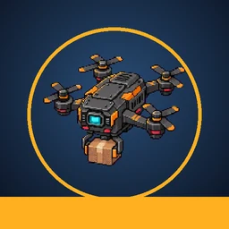

먹물 탐정의 베이커리 클리커
먹물 탐정의 베이커리 클리커
(Bakery Clicker)
검은 고양이 셰프 먹물과 함께 작은 빵집을 키워 보세요. 반죽을 두드려 코인을 모으고, 오븐과 직원을 늘려 4개의 지점을 완성합니다.
지금 만들고 있는 게임들이에요.
검은 고양이 셰프 먹물과 함께 작은 빵집을 키워 보세요. 반죽을 두드려 코인을 모으고, 오븐과 직원을 늘려 4개의 지점을 완성합니다.
검은 고양이 탐정 먹물과 먹보 조수 보리가 동물 마을의 수상한 사건을 쫓아요. 아름다운 그림 속에 숨은 단서를 찾으며 4개의 챕터, 48개의 에피소드, 240개의 스테이지를 풀어 가는 숨은그림찾기 추리 게임. 광고가 포함되어 있어요.
투석기를 쏘아 요새와 적 투석기를 무너뜨리는 복셀 공성 게임. 땅을 파고 성벽을 부수고, 화염·독·냉기·번개 탄으로 300개 스테이지를 공략하세요.
몰려오는 적을 포탑과 드론으로 막아 내는 세로형 디펜스 게임. 포탑 트리를 키우고 영웅과 장비를 모아 스테이지를 공략하세요.
항구에서 시세를 살펴 짐을 싣고 바다를 건너는 대항해 무역 게임. 해적을 만나면 퍼즐 해전으로 맞서고, 상인·해적·왕실 함대·탐험가·밀수업자 중 원하는 길로 선장을 키워 보세요.
먹물 탐정 마을의 이웃들을 짝지어 이어 주는 힐링 사천성. 판을 클리어할 때마다 사건 장면 속 숨은 물건을 찾아 이야기를 완성합니다.

스톰 애로우영웅의 활을 직접 조준해 성벽으로 몰려오는 적을 막아 내는 픽셀 디펜스 게임. 강화를 골라 무기와 보조 무기, 함정을 키우고 챕터와 무한 모드에 도전하세요.

드론 키우기작은 배송 드론에서 시작해 세계 곳곳의 도시로 임무를 넓혀 가는 픽셀 드론 육성 게임. 부품과 무기를 연구하고 드론을 조립해 더 어려운 작전에 나서 보세요.
모래폭풍 사고 뒤 화성 기지 '마르스 7'에 홀로 남은 정비 엔지니어가 되어 보세요. 산소와 전력이 줄어드는 기지를 수리하고, 상승선을 발사해 화성을 탈출하는 1인칭 생존 어드벤처.
셸과 별, 터짐 패턴을 조합해 나만의 폭죽을 만들고 밤하늘에 쏘아 올리는 방치형 게임. 공연을 키우고 불꽃 대회에서 심사위원의 마음을 사로잡아 보세요.
보물선을 찾아 떠난 해적 선장의 항해. 선박 텔레그래프 레버를 당겨 카드를 뽑고, 항해 중 만난 동료들을 전장에 세우는 자동 전투 수집형 RPG.
수채화처럼 부드러운 먹물 탐정의 이야기
픽셀 도트의 중독성 있는 재미
전략이 필요한 SF 세계까지
복잡한 설명 없이 바로 시작하고, 잠깐만 해도 성장이 느껴지는 게임을 만들어요.
플레이해 주신 분들의 의견을 읽고 더 재미있는 게임으로 다듬어 갈게요. 문의는 언제든 환영이에요.